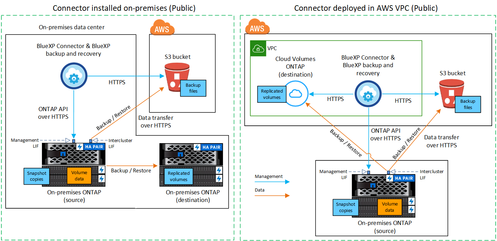
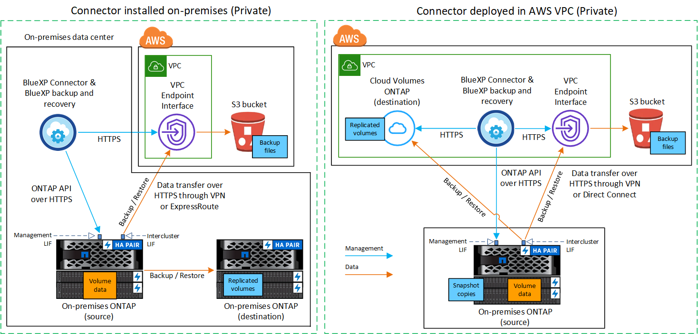
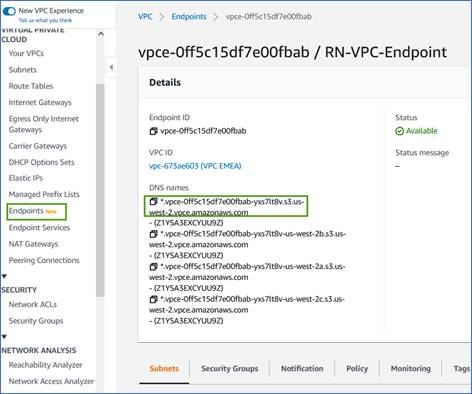
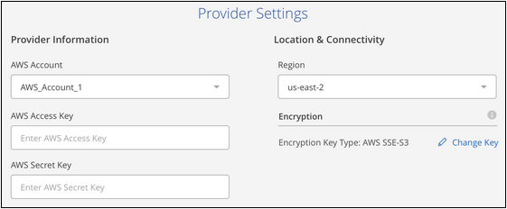
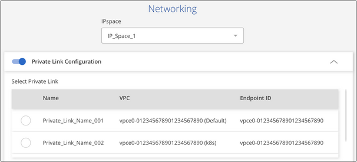
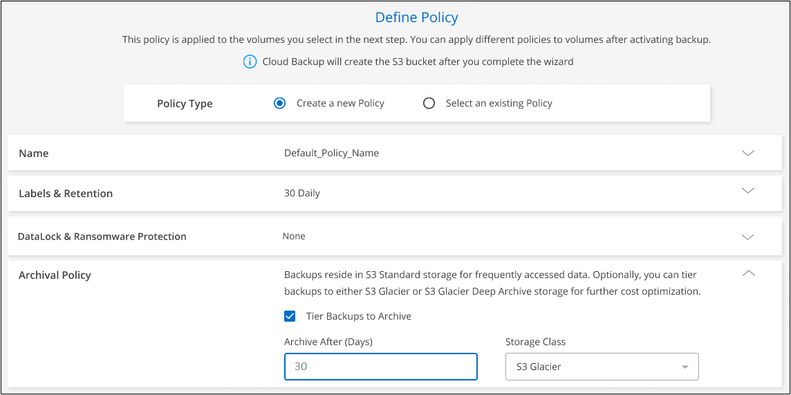

Amazon Web Services
Amazon Web Services
 Google Cloud
Google Cloud
 Microsoft Azure
Microsoft Azure
 Richiedi modifiche alla documentazione
Richiedi modifiche alla documentazione Modifica questa pagina
Modifica questa pagina Scopri come collaborare
Scopri come collaborareBackup dei dati ONTAP on-premise su Amazon S3
Collaboratori
Completa alcuni passaggi per iniziare a eseguire il backup dei dati dei volumi dai sistemi ONTAP on-premise allo storage Amazon S3.
I "sistemi ONTAP on-premise" includono i sistemi FAS, AFF e ONTAP Select.
Avvio rapido
Inizia subito seguendo questa procedura. I dettagli di ciascuna fase sono forniti nelle sezioni seguenti di questo argomento.
 Identificare il metodo di configurazione da utilizzare
Identificare il metodo di configurazione da utilizzareScegliere se connettere il cluster ONTAP on-premise direttamente ad AWS S3 tramite Internet pubblico o se utilizzare una connessione diretta VPN o AWS e instradare il traffico ad AWS S3 attraverso un’interfaccia endpoint privata VPC.
 Preparare il connettore BlueXP
Preparare il connettore BlueXPSe si dispone già di un connettore implementato in AWS VPC o on-premise, si è tutti pronti. In caso contrario, sarà necessario creare un connettore per eseguire il backup dei dati ONTAP nello storage AWS S3. Sarà inoltre necessario personalizzare le impostazioni di rete per il connettore in modo che possa connettersi ad AWS S3.
 Preparare il cluster ONTAP on-premise
Preparare il cluster ONTAP on-premiseIndividuare il cluster ONTAP in BlueXP, verificare che soddisfi i requisiti minimi e personalizzare le impostazioni di rete in modo che il cluster possa connettersi ad AWS S3.
 Preparare Amazon S3 come destinazione di backup
Preparare Amazon S3 come destinazione di backupImpostare le autorizzazioni per il connettore per creare e gestire il bucket S3. È inoltre necessario impostare le autorizzazioni per il cluster ONTAP on-premise in modo che possa leggere e scrivere i dati nel bucket S3.
In alternativa, puoi impostare le tue chiavi personalizzate per la crittografia dei dati invece di utilizzare le chiavi di crittografia Amazon S3 predefinite. Scopri come preparare il tuo ambiente AWS S3 per ricevere backup ONTAP.
 Abilitare il backup e il ripristino BlueXP sul sistema
Abilitare il backup e il ripristino BlueXP sul sistemaSelezionare l’ambiente di lavoro e fare clic su Enable > Backup Volumes (Abilita > volumi di backup) accanto al servizio di backup e ripristino nel pannello di destra. Quindi, seguire la procedura di installazione guidata per definire il criterio di backup predefinito e il numero di backup da conservare, quindi selezionare i volumi di cui si desidera eseguire il backup.
Diagrammi di rete per le opzioni di connessione
Esistono due metodi di connessione da utilizzare per la configurazione dei backup da sistemi ONTAP on-premise ad AWS S3.
-
Connessione pubblica - consente di collegare direttamente il sistema ONTAP ad AWS S3 utilizzando un endpoint S3 pubblico.
-
Connessione privata - utilizza una connessione VPN o AWS Direct e instrada il traffico attraverso un’interfaccia endpoint VPC che utilizza un indirizzo IP privato.
Il seguente diagramma mostra il metodo connessione pubblica e le connessioni che è necessario preparare tra i componenti. È possibile utilizzare un connettore installato in sede o un connettore implementato in AWS VPC.

Il seguente diagramma mostra il metodo private Connection e le connessioni che è necessario preparare tra i componenti. È possibile utilizzare un connettore installato in sede o un connettore implementato in AWS VPC.

Preparare il connettore
BlueXP Connector è il software principale per la funzionalità BlueXP. Per eseguire il backup e il ripristino dei dati ONTAP è necessario un connettore.
Creazione o commutazione di connettori
Se si dispone già di un connettore implementato in AWS VPC o on-premise, si è tutti pronti. In caso contrario, sarà necessario creare un connettore in una di queste posizioni per eseguire il backup dei dati ONTAP nello storage AWS S3. Non puoi utilizzare un connettore implementato in un altro provider cloud.
-
"Installazione di un connettore in un’area AWS GovCloud"
Il backup e ripristino BlueXP è supportato nelle regioni di GovCloud quando il connettore viene implementato nel cloud, non quando viene installato nelle vostre sedi. Inoltre, è necessario implementare il connettore da AWS Marketplace. Non è possibile implementare il connettore in un’area governativa dal sito Web di BlueXP SaaS.
Requisiti di rete del connettore
-
Assicurarsi che la rete in cui è installato il connettore abiliti le seguenti connessioni:
-
Una connessione HTTPS tramite la porta 443 al servizio di backup e ripristino BlueXP e allo storage a oggetti S3 ("vedere l’elenco degli endpoint")
-
Una connessione HTTPS sulla porta 443 alla LIF di gestione del cluster ONTAP
-
Per le implementazioni di AWS e AWS GovCloud sono richieste regole aggiuntive per i gruppi di sicurezza in entrata e in uscita. Vedere "Regole per il connettore in AWS" per ulteriori informazioni.
-
-
"Assicurarsi che il connettore disponga delle autorizzazioni per gestire il bucket S3".
-
Se si dispone di una connessione diretta o VPN dal cluster ONTAP al VPC e si desidera che la comunicazione tra il connettore e S3 rimanga nella rete interna AWS (una connessione privata), è necessario attivare un’interfaccia endpoint VPC su S3. Scopri come configurare un’interfaccia endpoint VPC.
Preparare il cluster ONTAP
Scopri il tuo cluster ONTAP in BlueXP
Prima di avviare il backup dei dati dei volumi, è necessario individuare il cluster ONTAP on-premise in BlueXP. Per aggiungere il cluster, è necessario conoscere l’indirizzo IP di gestione del cluster e la password dell’account utente amministratore.
Requisiti ONTAP
-
Minimo di ONTAP 9.7P5; si consiglia ONTAP 9.8P13 e versioni successive.
-
Una licenza SnapMirror (inclusa nel Premium Bundle o nel Data Protection Bundle).
Nota: il "Hybrid Cloud Bundle" non è richiesto quando si utilizza il backup e ripristino BlueXP.
Scopri come "gestire le licenze del cluster".
-
L’ora e il fuso orario sono impostati correttamente.
Scopri come "configurare l’ora del cluster".
Requisiti di rete del cluster
-
Il cluster richiede una connessione HTTPS in entrata dal connettore alla LIF di gestione del cluster.
-
Su ogni nodo ONTAP che ospita i volumi di cui si desidera eseguire il backup è richiesta una LIF intercluster. Queste LIF intercluster devono essere in grado di accedere all’archivio di oggetti.
Il cluster avvia una connessione HTTPS in uscita sulla porta 443 dalle LIF dell’intercluster allo storage Amazon S3 per le operazioni di backup e ripristino. ONTAP legge e scrive i dati da e verso lo storage a oggetti: Lo storage a oggetti non viene mai avviato, ma risponde.
-
Le LIF dell’intercluster devono essere associate a IPSpace che ONTAP deve utilizzare per connettersi allo storage a oggetti. "Scopri di più su IPspaces".
Quando si imposta il backup e il ripristino di BlueXP, viene richiesto di utilizzare IPSpace. È necessario scegliere l’IPSpace a cui sono associate queste LIF. Potrebbe trattarsi dell’IPSpace "predefinito" o di un IPSpace personalizzato creato.
Se si utilizza un IPSpace diverso da quello predefinito, potrebbe essere necessario creare un percorso statico per accedere allo storage a oggetti.
Tutte le LIF di intercluster all’interno di IPSpace devono avere accesso all’archivio di oggetti. Se non è possibile configurare questa opzione per l’IPSpace corrente, è necessario creare un IPSpace dedicato in cui tutte le LIF dell’intercluster abbiano accesso all’archivio di oggetti.
-
I server DNS devono essere stati configurati per la VM di storage in cui si trovano i volumi. Scopri come "Configurare i servizi DNS per SVM".
-
Aggiornare le regole del firewall, se necessario, per consentire le connessioni di backup e ripristino BlueXP da ONTAP allo storage a oggetti tramite la porta 443 e il traffico di risoluzione dei nomi dalla VM dello storage al server DNS tramite la porta 53 (TCP/UDP).
-
Se si utilizza un endpoint dell’interfaccia VPC privata in AWS per la connessione S3, per utilizzare HTTPS/443, è necessario caricare il certificato dell’endpoint S3 nel cluster ONTAP. Scopri come configurare un’interfaccia endpoint VPC e caricare il certificato S3.
-
"Assicurarsi che il cluster ONTAP disponga delle autorizzazioni per accedere al bucket S3".
Verificare i requisiti di licenza
-
Prima di poter attivare il backup e il ripristino BlueXP per il cluster, è necessario sottoscrivere un’offerta di pagamento a consumo (PAYGO) BlueXP Marketplace di AWS oppure acquistare e attivare una licenza BYOL di backup e ripristino BlueXP di NetApp. Queste licenze sono destinate al tuo account e possono essere utilizzate su più sistemi.
-
Per le licenze PAYGO di backup e ripristino BlueXP, è necessario un abbonamento a "Offerta NetApp BlueXP di AWS Marketplace". La fatturazione per il backup e il ripristino BlueXP viene effettuata tramite questo abbonamento.
-
Per le licenze BYOL di backup e ripristino BlueXP, è necessario il numero di serie di NetApp che consente di utilizzare il servizio per la durata e la capacità della licenza. "Scopri come gestire le tue licenze BYOL".
-
-
È necessario disporre di un abbonamento AWS per lo spazio di storage a oggetti in cui verranno collocati i backup.
Puoi creare backup da sistemi on-premise ad Amazon S3 in tutte le regioni "Dove è supportato Cloud Volumes ONTAP"; Incluse le regioni di AWS GovCloud. Specificare la regione in cui verranno memorizzati i backup quando si imposta il servizio.
Preparare l’ambiente AWS
Impostare le autorizzazioni S3
È necessario configurare due set di autorizzazioni:
-
Permessi per il connettore per creare e gestire il bucket S3.
-
Autorizzazioni per il cluster ONTAP on-premise in modo che possa leggere e scrivere i dati nel bucket S3.
-
Confermare che le seguenti autorizzazioni S3 (dall’ultima "Policy BlueXP") Fanno parte del ruolo IAM che fornisce al connettore le autorizzazioni necessarie. In caso contrario, consultare "Documentazione AWS: Modifica delle policy IAM".
{ "Sid": "backupPolicy", "Effect": "Allow", "Action": [ "s3:DeleteBucket", "s3:GetLifecycleConfiguration", "s3:PutLifecycleConfiguration", "s3:PutBucketTagging", "s3:ListBucketVersions", "s3:GetObject", "s3:DeleteObject", "s3:PutObject", "s3:ListBucket", "s3:ListAllMyBuckets", "s3:GetBucketTagging", "s3:GetBucketLocation", "s3:GetBucketPolicyStatus", "s3:GetBucketPublicAccessBlock", "s3:GetBucketAcl", "s3:GetBucketPolicy", "s3:PutBucketPolicy", "s3:PutBucketOwnershipControls", "s3:PutBucketPublicAccessBlock", "s3:PutEncryptionConfiguration", "s3:GetObjectVersionTagging", "s3:GetBucketObjectLockConfiguration", "s3:GetObjectVersionAcl", "s3:PutObjectTagging", "s3:DeleteObjectTagging", "s3:GetObjectRetention", "s3:DeleteObjectVersionTagging", "s3:PutBucketObjectLockConfiguration", "s3:ListBucketByTags", "s3:DeleteObjectVersion", "s3:GetObjectTagging", "s3:PutBucketVersioning", "s3:PutObjectVersionTagging", "s3:GetBucketVersioning", "s3:BypassGovernanceRetention", "s3:PutObjectRetention", "s3:GetObjectVersion", "athena:StartQueryExecution", "athena:GetQueryResults", "athena:GetQueryExecution", "glue:GetDatabase", "glue:GetTable", "glue:CreateTable", "glue:CreateDatabase", "glue:GetPartitions", "glue:BatchCreatePartition", "glue:BatchDeletePartition" ], "Resource": [ "arn:aws:s3:::netapp-backup-*" ] },
Quando si creano backup nelle regioni AWS China, è necessario modificare il nome risorsa AWS "arn" in tutte le sezioni Resource delle policy IAM da "aws" a "aws-cn", ad esempio arn:aws-cn:s3:::netapp-backup-*. -
Quando si attiva il servizio, la procedura guidata di backup richiede di inserire una chiave di accesso e una chiave segreta. Queste credenziali vengono passate al cluster ONTAP in modo che ONTAP possa eseguire il backup e il ripristino dei dati nel bucket S3. A tale scopo, è necessario creare un utente IAM con le seguenti autorizzazioni:
{ "Version": "2012-10-17", "Statement": [ { "Action": [ "s3:GetObject", "s3:PutObject", "s3:DeleteObject", "s3:ListBucket", "s3:ListAllMyBuckets", "s3:GetBucketLocation", "s3:PutEncryptionConfiguration" ], "Resource": "arn:aws:s3:::netapp-backup-*", "Effect": "Allow", "Sid": "backupPolicy" } ] } { "Version": "2012-10-17", "Statement": [ { "Action": [ "s3:ListBucket", "s3:GetBucketLocation" ], "Resource": "arn:aws:s3:::netapp-backup*", "Effect": "Allow" }, { "Action": [ "s3:GetObject", "s3:PutObject", "s3:DeleteObject", "s3:ListAllMyBuckets", "s3:PutObjectTagging", "s3:GetObjectTagging", "s3:RestoreObject", "s3:GetBucketObjectLockConfiguration", "s3:GetObjectRetention", "s3:PutBucketObjectLockConfiguration", "s3:PutObjectRetention" ], "Resource": "arn:aws:s3:::netapp-backup*/*", "Effect": "Allow" } ] }Vedere "Documentazione AWS: Creazione di un ruolo per delegare le autorizzazioni a un utente IAM" per ulteriori informazioni.
Configurare le chiavi AWS gestite dal cliente per la crittografia dei dati
Se si desidera utilizzare le chiavi di crittografia predefinite di Amazon S3 per crittografare i dati trasferiti tra il cluster on-premise e il bucket S3, l’installazione predefinita utilizza questo tipo di crittografia.
Se si desidera utilizzare le proprie chiavi gestite dal cliente per la crittografia dei dati invece di utilizzare le chiavi predefinite, è necessario che le chiavi gestite per la crittografia siano già impostate prima di avviare la procedura guidata di backup e ripristino di BlueXP. "Scopri come utilizzare le tue chiavi".
Configurare il sistema per una connessione privata utilizzando un’interfaccia endpoint VPC
Se si desidera utilizzare una connessione Internet pubblica standard, tutte le autorizzazioni vengono impostate dal connettore e non è necessario eseguire altre operazioni. Questo tipo di connessione viene mostrato nella "primo diagramma".
Se si desidera una connessione più sicura via Internet dal data center on-premise al VPC, è possibile selezionare una connessione AWS PrivateLink nella procedura guidata di attivazione del backup. È necessario se si intende utilizzare una VPN o una connessione diretta AWS per collegare il sistema on-premise tramite un’interfaccia endpoint VPC che utilizza un indirizzo IP privato. Questo tipo di connessione viene mostrato nella "secondo diagramma".
-
Creare una configurazione dell’endpoint dell’interfaccia utilizzando la console Amazon VPC o la riga di comando. "Scopri i dettagli sull’utilizzo di AWS PrivateLink per Amazon S3".
-
Modificare la configurazione del gruppo di protezione associata a BlueXP Connector. È necessario modificare la policy in "Custom" (da "Full Access") Aggiungere le autorizzazioni S3 dal criterio di backup come mostrato in precedenza.

Se si utilizza la porta 80 (HTTP) per la comunicazione con l’endpoint privato, si è tutti impostati. È ora possibile attivare il backup e il ripristino BlueXP sul cluster.
Se si utilizza la porta 443 (HTTPS) per la comunicazione con l’endpoint privato, è necessario copiare il certificato dall’endpoint VPC S3 e aggiungerlo al cluster ONTAP, come illustrato nei 4 passaggi successivi.
-
Ottenere il nome DNS dell’endpoint dalla console AWS.

-
Ottenere il certificato dall’endpoint VPC S3. Lo fai entro "Accesso alla macchina virtuale che ospita BlueXP Connector" ed eseguire il seguente comando. Quando si immette il nome DNS dell’endpoint, aggiungere "bucket" all’inizio, sostituendo "*":
[ec2-user@ip-10-160-4-68 ~]$ openssl s_client -connect bucket.vpce-0ff5c15df7e00fbab-yxs7lt8v.s3.us-west-2.vpce.amazonaws.com:443 -showcerts -
Dall’output di questo comando, copiare i dati per il certificato S3 (tutti i dati compresi tra i tag BEGIN / END CERTIFICATE):
Certificate chain 0 s:/CN=s3.us-west-2.amazonaws.com` i:/C=US/O=Amazon/OU=Server CA 1B/CN=Amazon -----BEGIN CERTIFICATE----- MIIM6zCCC9OgAwIBAgIQA7MGJ4FaDBR8uL0KR3oltTANBgkqhkiG9w0BAQsFADBG … … GqvbOz/oO2NWLLFCqI+xmkLcMiPrZy+/6Af+HH2mLCM4EsI2b+IpBmPkriWnnxo= -----END CERTIFICATE----- -
Accedere alla CLI del cluster ONTAP e applicare il certificato copiato utilizzando il seguente comando (sostituire il proprio nome della VM di storage):
cluster1::> security certificate install -vserver cluster1 -type server-ca Please enter Certificate: Press <Enter> when done
Abilitare il backup e ripristino BlueXP
Abilita backup e ripristino BlueXP in qualsiasi momento direttamente dall’ambiente di lavoro on-premise.
-
Da Canvas, selezionare l’ambiente di lavoro e fare clic su Enable > Backup Volumes (Abilita > volumi di backup) accanto al servizio di backup e ripristino nel pannello a destra.
Se la destinazione Amazon S3 per i backup esiste come ambiente di lavoro su Canvas, puoi trascinare il cluster sull’ambiente di lavoro Amazon S3 per avviare l’installazione guidata.

-
Seleziona Amazon Web Services come provider e fai clic su Avanti.
-
Inserire i dati del provider e fare clic su Avanti.
-
L’account AWS, la chiave di accesso AWS e la chiave segreta utilizzati per memorizzare i backup.
La chiave di accesso e la chiave segreta sono destinate all’utente IAM creato per consentire al cluster ONTAP di accedere al bucket S3.
-
Regione AWS in cui verranno memorizzati i backup.
-
Sia che tu utilizzi le chiavi di crittografia Amazon S3 predefinite o scelga le chiavi gestite dal cliente dal tuo account AWS, per gestire la crittografia dei tuoi dati. ("Scopri come utilizzare le tue chiavi").

-
-
Se non si dispone di una licenza di backup e ripristino BlueXP per l’account, a questo punto verrà richiesto di selezionare il tipo di metodo di addebito che si desidera utilizzare. È possibile sottoscrivere un’offerta di mercato BlueXP a consumo (PAYGO) di AWS (oppure, se si dispone di più abbonamenti, è necessario selezionarne uno) oppure acquistare e attivare una licenza BYOL di backup e ripristino BlueXP da NetApp. "Scopri come configurare le licenze di backup e ripristino di BlueXP."
-
Inserire i dettagli di rete e fare clic su Avanti.
-
IPSpace nel cluster ONTAP in cui risiedono i volumi di cui si desidera eseguire il backup. Le LIF intercluster per questo IPSpace devono disporre di accesso a Internet in uscita.
-
Se si desidera, scegliere se utilizzare un AWS PrivateLink precedentemente configurato. "Scopri i dettagli sull’utilizzo di AWS PrivateLink per Amazon S3".

-
-
Inserire i dettagli del criterio di backup che verranno utilizzati per il criterio predefinito e fare clic su Avanti. È possibile selezionare una policy esistente o crearne una nuova inserendo le selezioni in ciascuna sezione:
-
Immettere il nome del criterio predefinito. Non è necessario modificare il nome.
-
Definire la pianificazione del backup e scegliere il numero di backup da conservare. "Consulta l’elenco delle policy esistenti che puoi scegliere".
-
Se si utilizza ONTAP 9.11.1 e versioni successive, è possibile scegliere di proteggere i backup da attacchi ransomware e di eliminazione configurando una delle impostazioni di DataLock e ransomware Protection. DataLock protegge i file di backup da modifiche o eliminazioni e ransomware Protection esegue la scansione dei file di backup per rilevare eventuali attacchi ransomware nei file di backup. "Scopri di più sulle impostazioni DataLock disponibili".
-
Se si utilizza ONTAP 9.10.1 e versioni successive, è possibile scegliere di eseguire il tiering dei backup nello storage S3 Glacier o S3 Glacier Deep Archive dopo un certo numero di giorni per un’ulteriore ottimizzazione dei costi. "Scopri di più sull’utilizzo dei Tier di archiviazione".

Importante: se si intende utilizzare DataLock, è necessario attivarlo nel primo criterio quando si attiva il backup e ripristino BlueXP.
-
-
Selezionare i volumi di cui si desidera eseguire il backup utilizzando il criterio di backup definito nella pagina Select Volumes (Seleziona volumi). Se si desidera assegnare criteri di backup diversi a determinati volumi, è possibile creare criteri aggiuntivi e applicarli successivamente a tali volumi.
-
Per eseguire il backup di tutti i volumi esistenti ed eventuali volumi aggiunti in futuro, selezionare la casella "Backup di tutti i volumi esistenti e futuri…". Si consiglia di utilizzare questa opzione per eseguire il backup di tutti i volumi e non è necessario ricordarsi di attivare i backup per i nuovi volumi.
-
Per eseguire il backup solo dei volumi esistenti, selezionare la casella nella riga del titolo (
 ).
). -
Per eseguire il backup di singoli volumi, selezionare la casella relativa a ciascun volume (
 ).
).
-
Se in questo ambiente di lavoro sono presenti copie Snapshot locali per volumi di lettura/scrittura che corrispondono all’etichetta della pianificazione di backup appena selezionata per questo ambiente di lavoro (ad esempio, giornaliero, settimanale, ecc.), viene visualizzato un messaggio aggiuntivo "Export existing Snapshot copies to object storage as backup copies" (Esporta copie Snapshot esistenti nello storage a oggetti come copie di backup). Selezionare questa casella se si desidera copiare tutte le istantanee storiche nello storage a oggetti come file di backup per garantire la protezione più completa per i volumi.
-
-
Fare clic su Activate Backup (attiva backup) e il backup e ripristino di BlueXP inizia a eseguire i backup iniziali dei volumi.
Un bucket S3 viene creato automaticamente nell’account di servizio indicato dalla chiave di accesso S3 e dalla chiave segreta immessa e i file di backup vengono memorizzati in tale account. Viene visualizzata la dashboard di backup del volume, che consente di monitorare lo stato dei backup. È inoltre possibile monitorare lo stato dei processi di backup e ripristino utilizzando "Pannello Job Monitoring (monitoraggio processi)".
Quali sono le prossime novità?
-
È possibile "gestire i file di backup e le policy di backup". Ciò include l’avvio e l’arresto dei backup, l’eliminazione dei backup, l’aggiunta e la modifica della pianificazione di backup e molto altro ancora.
-
È possibile "gestire le impostazioni di backup a livello di cluster". Ciò include la modifica delle chiavi di storage utilizzate da ONTAP per accedere allo storage cloud, la modifica della larghezza di banda della rete disponibile per caricare i backup nello storage a oggetti, la modifica dell’impostazione di backup automatico per i volumi futuri e molto altro ancora.
-
Puoi anche farlo "ripristinare volumi, cartelle o singoli file da un file di backup" A un sistema Cloud Volumes ONTAP in AWS o a un sistema ONTAP on-premise.